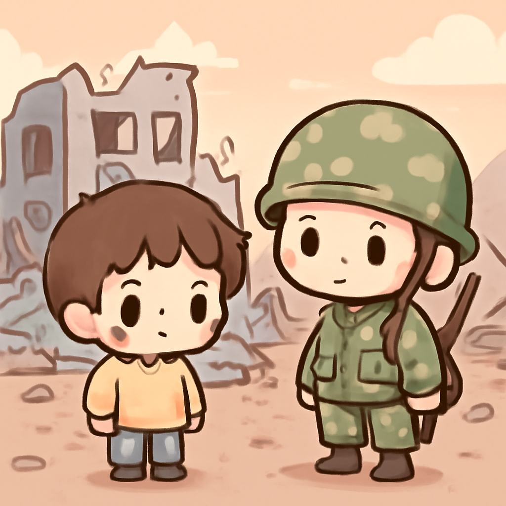
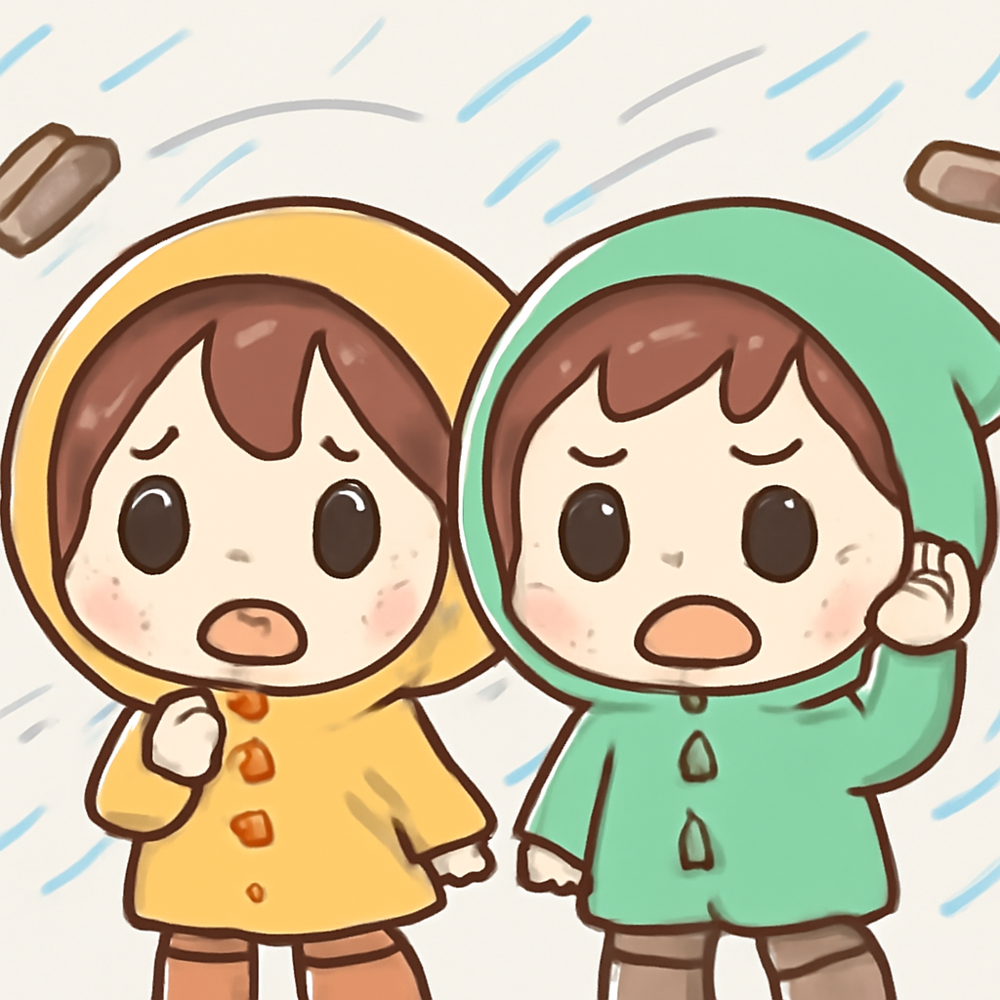

其一 · 美國華府 · 特朗普律師被任命為新總檢察長
特朗普前律師被確認為美國新總檢察長。
在美國華府，特朗普的前刑事辯護律師Todd Blanche剛剛被確認為新任總檢察長，這是他在國家法律界的一次大升遷。儘管有些共和黨人對此有不同意見，但這個任命似乎是特朗普影響力的又一證明。這讓人不禁想，這位新官會不會用法律來替特朗普解決一些難題呢？
🔗 原始新聞 ↗
2026-08-09 · 以古觀今，以笑抗愁
特朗普前律師被確認為美國新總檢察長。
在美國華府，特朗普的前刑事辯護律師Todd Blanche剛剛被確認為新任總檢察長，這是他在國家法律界的一次大升遷。儘管有些共和黨人對此有不同意見，但這個任命似乎是特朗普影響力的又一證明。這讓人不禁想，這位新官會不會用法律來替特朗普解決一些難題呢？
🔗 原始新聞 ↗
基輔周邊遭俄羅斯導彈攻擊，造成三人死亡。

在烏克蘭基輔附近，俄羅斯的導彈攻擊再次發生，這次造成了三人死亡，包括一名兒童。這場攻擊是總統澤連斯基警告烏克蘭防空系統資源不足後的繼續行動，顯示出局勢的緊張和無法預測。當然，這樣的悲劇讓人心痛，真希望世界能早日迎來和平。
🔗 原始新聞 ↗
颱風海豚重創沖繩，導致數萬戶停電。

日本沖繩近日遭遇颱風海豚的猛烈襲擊，造成超過44,000戶停電，並有五人受傷。這場颱風的威力讓人感嘆，天氣變化真是不可小覷。希望沖繩的朋友們能早日恢復正常生活，別忘了在家裡儲備一些零食，這樣才能應對任何突發狀況！
🔗 原始新聞 ↗
美國在右派總統上任首日提供十億美元援助。
哥倫比亞的新總統阿貝拉多·德拉·埃斯普里埃拉在上任的第一天，就收到了美國提供的十億美元援助，這筆資金主要用於打擊他所稱的"毒品恐怖主義"。這筆援助不僅顯示了美國對哥倫比亞的支持，也可能改變該國的政治方向。希望這筆錢能夠真實地幫助到需要的人，而不是變成新的政治鬧劇！
🔗 原始新聞 ↗
烏克蘭對俄羅斯電商Wildberries發動攻擊。
隨著局勢的升級，烏克蘭對俄羅斯最大的電商平台Wildberries的倉庫展開了攻擊，這讓其創始人面臨前所未有的挑戰。這場戰爭不僅是軍事上的，還涉及到商業和科技的鬥爭。希望這場商戰不會拖累普通消費者的網購體驗！
🔗 原始新聞 ↗